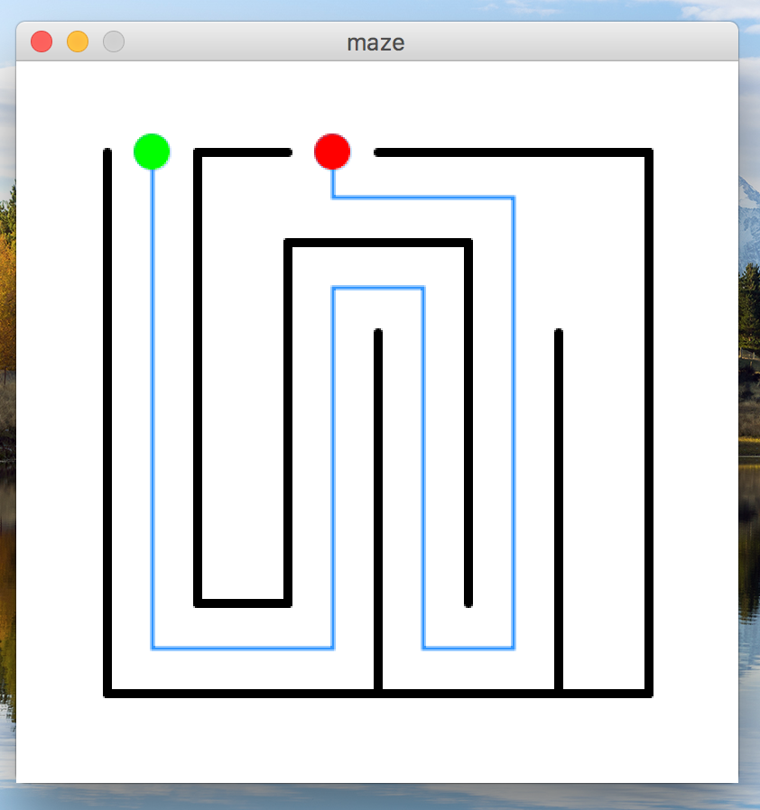
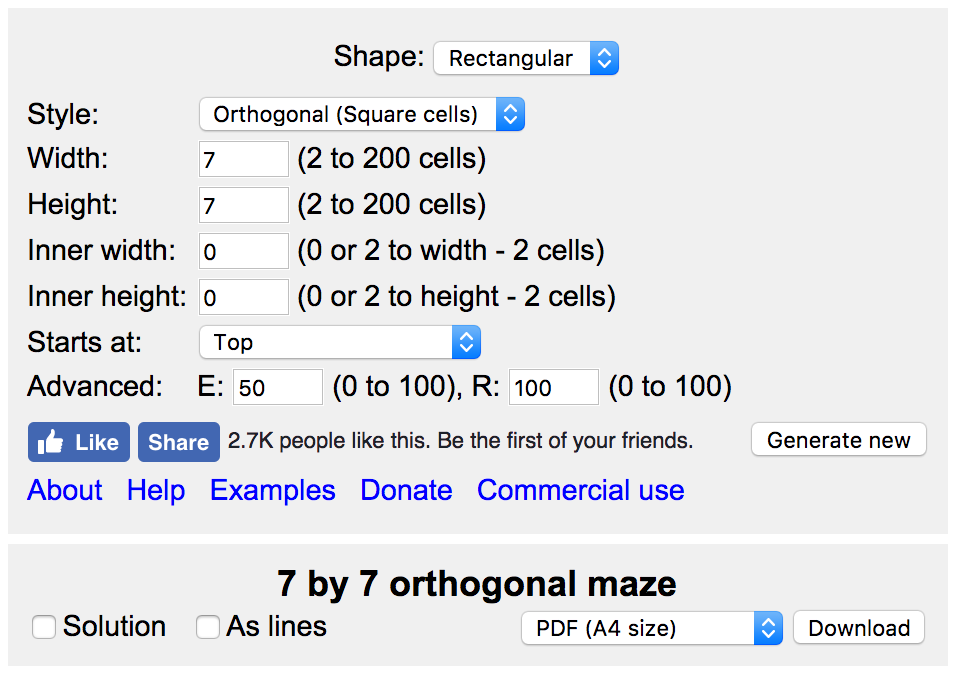

This assignment should be written in the processing programming language. You should only use processing features that we have discussed up to this point. If you have questions about whether or not a particular feature can/should be used, ask the instructors! You may use any processing version 3.0 or newer.
Your program file should have a header comment at the top that has the following format:
//
// Author: Student Name
// Description:
// A short description of what this program does!
//
In this assignment, you will write a processing program that creates an image of a maze, similar to the one shown below:

However, You should not create a maze that is identical to this one! In fact, if you do, there will be severe point deductions.
Instead, must use the website www.mazegenerator.net to determine what maze to draw. This website creates randomly-generated mazes, based on a few settings that you give it. Navigate to this site, and input the settings as shown below:

Notice that all of the settings are the default, except the width and height are set to 7. One all settings are set, click “Generate new” to see the maze. Part of the point of this assignment is for you to build a maze that is unique to you, and draw the solution path through it. You should not be sharing mazes with others. If we notice that you and another student built the exact same maze, you will be penalized. A few other things that you must do when drawing your maze:
Like I said before, your maze should be unique to you. Do not just copy my maze, and do not share your maze design with other students in the class.
You processing window must be square (meaning, the width and height are the same). The smallest you may go is 400x400 pixels, and the largest is 700x700 pixels.
You should name your code file maze.pde.
This was assigned on 9/1/2017. It is due on 9/8/2017 at 5:00pm.
Turn in each of the files described in the spec (1 total) the assignment 2 dropbox in D2L before the due date. Make sure to name the files exactly as this document specifies. In general, make sure to follow these instructions precisely. If you don’t, we will deduct points!!!